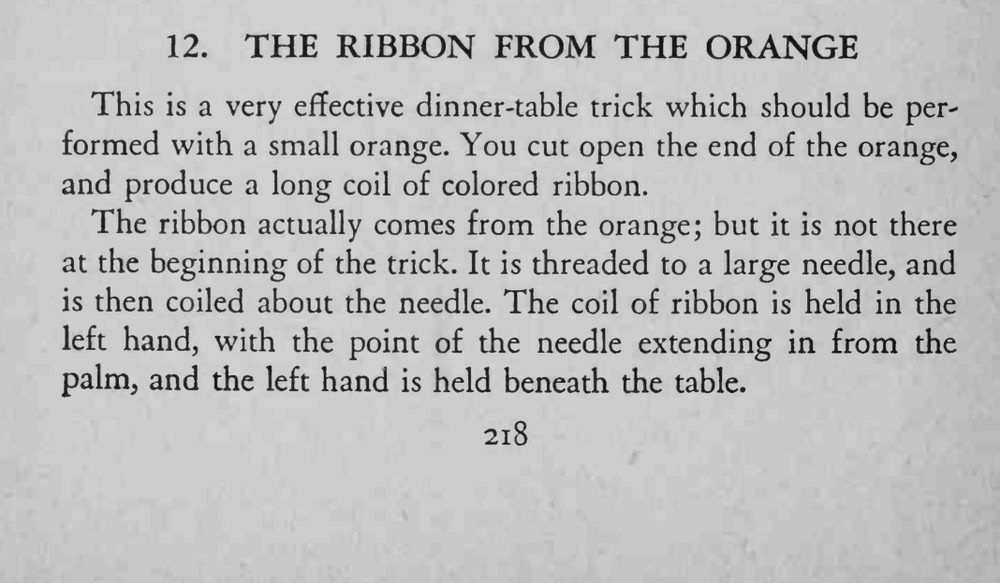
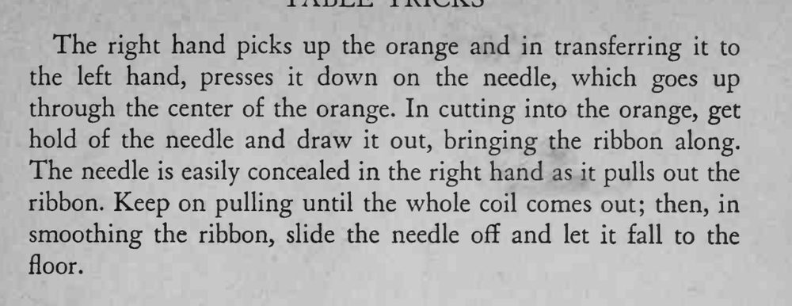

切开橙子的一端，魔术师从里面抽出一长串彩色纸带，仿佛橙子里藏着一整卷彩带。
针穿过橙子中心时别让橙子歪，抽彩带要匀，最后褪针动作要自然。


This is a very effective dinner-table trick which should be performed with a small orange. You cut open the end of the orange, and produce a long coil of colored ribbon. The ribbon actually comes from the orange; but it is not there at the beginning of the trick. It is threaded to a large needle, and is then coiled about the needle. The coil of ribbon is held in the left hand, with the point of the needle extending in from the palm, and the left hand is held beneath the table. The right hand picks up the orange and in transferring it to the left hand, presses it down on the needle, which goes up through the center of the orange. In cutting into the orange, get hold of the needle and draw it out, bringing the ribbon along. The needle is easily concealed in the right hand as it pulls out the ribbon. Keep on pulling until the whole coil comes out; then, in smoothing the ribbon, slide the needle off and let it fall to the floor.